Muhammad Egan Renjiro
Community Volunteer | Social Fundraiser Expert
I am committed to giving back to the community through volunteering. My efforts focus on social causes, environmental conservation, and supporting underprivileged groups, drawing from my passion for positive impact.
Through organizations like AIESEC and local initiatives, I organize events, fundraisers, and awareness campaigns to drive change.
Volunteer Activities

VP, Business Development (2022-2023)
Leading business development initiatives at AIESEC to expand global partnerships, drive innovative youth leadership programs, and foster cross-cultural exchanges that empower young people worldwide. Won Best Business Development for 2 years straight.